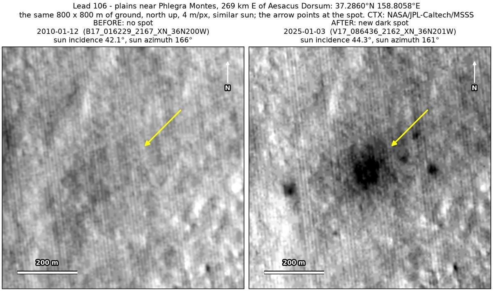
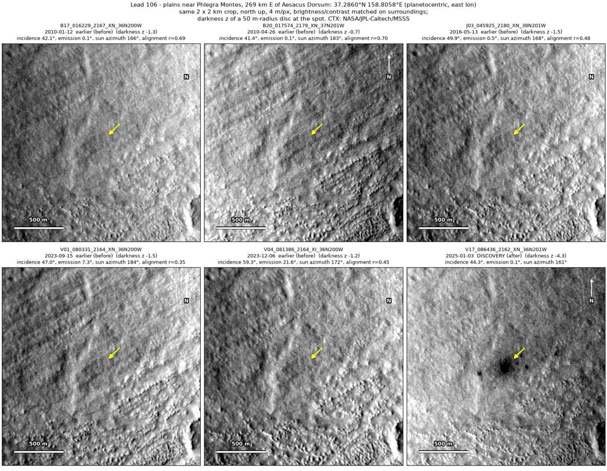
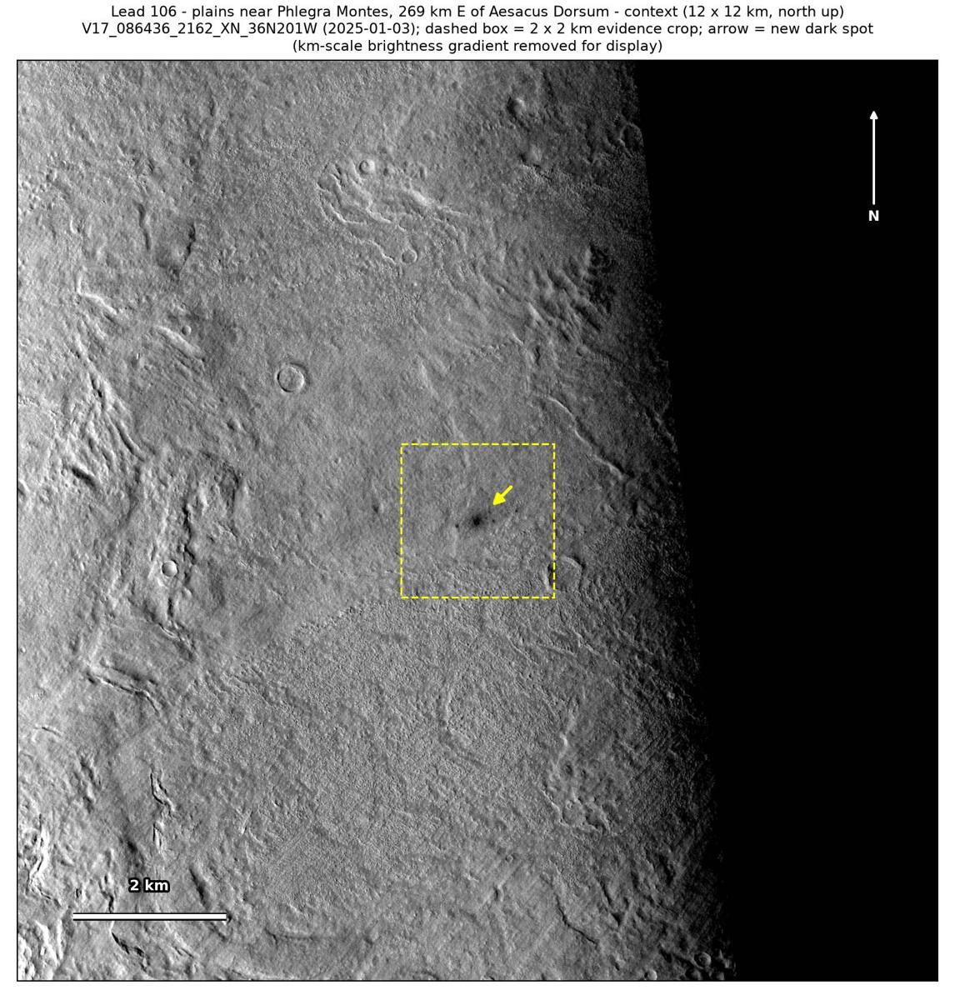

Professor of Mathematics
Paata Ivanisvili
Department of Mathematics, University of California, Irvine

← Possible new impact sites on Mars
Candidate 106: Plains near Phlegra Montes, 269 km east of Aesacus Dorsum
Promising · roughly 65%

What changed. A cluster of new dark spots, a dark halo about 130 m across with a darker core and three smaller spots within 280 m of it, appeared on plains near Phlegra Montes between December 2023 and January 2025, in one CTX image so far.
Why it may be a new impact. Four earlier images from 2010 to 2023 show the site no darker than its surroundings, one of them, of January 2010, under nearly the same sun as the January 2025 image, and the aligned before-and-after difference is deepest at the halo, the strongest change anywhere in the 2 × 2 km around it. Separate round dark spots with a halo and no tracks are not what dust devils or wind leave, but fit a small new impact.
- Location
- 37.286° N, 158.806° E
- Absent
- 12 January 2010, 26 April 2010, 13 May 2016 and 6 December 2023
- Present
- 3 January 2025
- Size
- Cluster of dark spots: a dark halo about 130 m across (154 × 170 m) with a darker core about 60 m across, and three smaller dark spots 110 to 280 m away
- Confidence
- Promising candidate; roughly 65% that it is a new impact.
- Caveat
- A HiRISE image of 30 August 2018 covers the site, but it was taken years before the spots formed. Only one CTX image shows the cluster, so an image defect cannot be fully ruled out, although its separate parts span about 80 image pixels. The automatic check fell just short of confirming that the spots were absent in the two 2023 images, so the window may reach back to May 2016, and the dark feature used as a check lies too close to the cluster to be told apart from it cleanly. Like every candidate here, it is unconfirmed: see the caveat.

